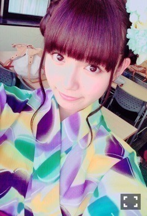
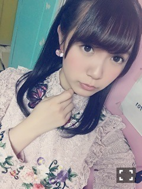

| 2016/01 04 Mon | ひめたん-0o0-その602 |
あけましておめでとうございます！
2016年も
よろしくお願いします＼(^o^)／

おお、新年っぽい写真！
もう数ヶ月も前ですが
ヤンマガさんの時のですね！
そうか、私、
今年の目標とか全部
前回の日記に書いちゃったんだな。
2015年は
今までで一番充実してた年だと
思っているのですが
2016年はそれを越えたいです！
そうやって毎年更新していきたいですね！
今の私の生活はお仕事中心で回っているので
年始休みには何したらいいか
もうわからなくて困っております。笑
一つ一つの現場を大切に、
人との出会いを大切に、
感謝の気持ちを忘れることなく
取り組んでいけたら素敵ですよね( ˇωˇ )
最近心がけているのが
"空白の時間を作らない"ということです
もう少し器用に時間使えるようになりたい。
一年前の日記がすごく
前向きなことを書いていて
当時の私としては若干無理しながら
書いたような記憶があるんだけれど(笑)
でもそうやって頑張ってでも
ポジティブになろうとした
自分がいたから
一年間楽しくやれたんだな～と思って
去年の自分に感謝です(´,,•ω•,,｀)
さて、大晦日は
紅白歌合戦に出演しました！

君の名は希望 紅白用衣装～♪
皆さん、
37人でのパフォーマンスは
いかがでしたか？
全員で一年の締めくくりとして
夢だった舞台に立つことができました
本当にありがとうございます(´;ω;`)
紅白出場が実現した今
さらに新しい夢、というかみんなの指標を
見つけられたらいいなと思います。
次はこれに向かって頑張る！
というものがある方が
やっぱりチーム力が上がる気がするもんね♪
今年も皆さんと一緒に素敵な景色を
たくさん見つけられたら幸せです。
こっちの衣装も素敵(´,,•ω•,,｀)
1/1はソニレコ更新日でした！
めでたい！
新OPできましたo(^▽^)o
鍋パーティーしてるよ
今月のお当番は純奈です～
さて、今日は中3組の3人で
ユニバ行ってきました！！！

私自身は11年ぶりのユニバ！楽しかった！
私、同世代の子たちだけで
遠くまで出かけたの
今日が初めてだったの(´,,•ω•,,｀)
行きの新幹線の中
寝るかなって思ってたけれど
結局新大阪着くまでずっと話止まんくて。
久々のユニバ
アトラクションもパレードも
満喫した一日でした～♪
ユニバ最高！また行きます！
それにしても、改めて思ったけれど、
外に連れ出してくれる人がいないと
家でずっと引きこもりしちゃうからだめね。
今日はいっぱい歩いたあ
リラックスできた一日でした
やっぱ2人といると居心地が良いんだな～
いくちゃんちーちゃんありがとう！
みなさんはお正月どうお過ごしですか～？
(＊´・ω・＊)
コメント(972)
2016/01/04 23:42